Binius: highly efficient proofs over binary fields
2024 Apr 29
See all posts
Binius: highly efficient proofs over binary fields
This post is primarily intended for readers roughly familiar with 2019-era cryptography, especially SNARKs and STARKs. If you are not, I recommend reading those articles first. Special thanks to Justin Drake, Jim Posen, Benjamin Diamond and Radi Cojbasic for feedback and review.
Over the past two years, STARKs have become a crucial and irreplaceable technology for efficiently making easy-to-verify cryptographic proofs of very complicated statements (eg. proving that an Ethereum block is valid). A key reason why is small field sizes: whereas elliptic curve-based SNARKs require you to work over 256-bit integers in order to be secure enough, STARKs let you use much smaller field sizes, which are more efficient: first the Goldilocks field (64-bit integers), and then Mersenne31 and BabyBear (both 31-bit). Thanks to these efficiency gains, Plonky2, which uses Goldilocks, is hundreds of times faster at proving many kinds of computation than its predecessors.
A natural question to ask is: can we take this trend to its logical conclusion, building proof systems that run even faster by operating directly over zeroes and ones? This is exactly what Binius is trying to do, using a number of mathematical tricks that make it very different from the SNARKs and STARKs of three years ago. This post goes through the reasons why small fields make proof generation more efficient, why binary fields are uniquely powerful, and the tricks that Binius uses to make proofs over binary fields work so effectively.

Binius. By the end of this post, you should be able to understand every part of this diagram.
Table of contents
Recap: finite fields
One of the key tasks of a cryptographic proving system is to operate over huge amounts of data, while keeping the numbers small. If you can compress a statement about a large program into a mathematical equation involving a few numbers, but those numbers are as big as the original program, you have not gained anything.
To do complicated arithmetic while keeping numbers small, cryptographers generally use modular arithmetic. We pick some prime "modulus" p. The % operator means "take the remainder of": \(15\ \%\ 7 = 1\), \(53\ \%\ 10 = 3\), etc (note that the answer is always non-negative, so for example \(-1\ \%\ 10 = 9\)).
You've probably already seen modular arithmetic, in the context of adding and subtracting time (eg. what time is four hours after 9:00?). But here, we don't just add and subtract modulo some number, we also multiply, divide and take exponents.
We redefine:
\(x + y \Rightarrow (x + y)\) % \(p\)
\(x * y \Rightarrow (x * y)\) % \(p\)
\(x^y \Rightarrow (x^y)\) % \(p\)
\(x - y \Rightarrow (x - y)\) % \(p\)
\(x / y \Rightarrow (x * y ^{p-2})\) % \(p\)
The above rules are all self-consistent. For example, if \(p = 7\), then:
- \(5 + 3 = 1\) (because \(8\) % \(7 = 1\))
- \(1 - 3 = 5\) (because \(-2\) % \(7 = 5\))
- \(2 \cdot 5 = 3\)
- \(3 / 5 = 2\) (because (\(3 \cdot 5^5\)) % \(7 = 9375\) % \(7 = 2\))
A more general term for this kind of structure is a finite field. A finite field is a mathematical structure that obeys the usual laws of arithmetic, but where there's a limited number of possible values, and so each value can be represented in a fixed size.
Modular arithmetic (or prime fields) is the most common type of finite field, but there is also another type: extension fields. You've probably already seen an extension field before: the complex numbers. We "imagine" a new element, which we label \(i\), and declare that it satisfies \(i^2 = -1\). You can then take any combination of regular numbers and \(i\), and do math with it: \((3i+2) * (2i + 4) =\) \(6i^2 + 12i + 4i + 8 = 16i + 2\). We can similarly take extensions of prime fields. As we start working over fields that are smaller, extensions of prime fields become increasingly important for preserving security, and binary fields (which Binius uses) depend on extensions entirely to have practical utility.
Recap: arithmetization
The way that SNARKs and STARKs prove things about computer programs is through arithmetization: you convert a statement about a program that you want to prove, into a mathematical equation involving polynomials. A valid solution to the equation corresponds to a valid execution of the program.
To give a simple example, suppose that I computed the 100'th Fibonacci number, and I want to prove to you what it is. I create a polynomial \(F\) that encodes Fibonacci numbers: so \(F(0) = F(1) = 1\), \(F(2) = 2\), \(F(3) = 3\), \(F(4) = 5\), and so on for 100 steps. The condition that I need to prove is that \(F(x+2) = F(x) + F(x+1)\) across the range \(x = \{0, 1 ... 98\}\). I can convince you of this by giving you the quotient:
\[H(x) = \frac{F(x+2) - F(x+1) - F(x)}{Z(x)}\]
Where \(Z(x) = (x - 0) * (x - 1) * ... * (x - 98)\). If I can provide valid \(F\) and \(H\) that satisfy this equation, then \(F\) must satisfy \(F(x+2) - F(x+1) - F(x)\) across that range. If I additionally verify that \(F\) satisfies \(F(0) = F(1) = 1\), then \(F(100)\) must actually be the 100th Fibonacci number.
If you want to prove something more complicated, then you replace the "simple" relation \(F(x+2) = F(x) + F(x+1)\) with a more complicated equation, which basically says "\(F(x+1)\) is the output of initializing a virtual machine with the state \(F(x)\), and running one computational step". You can also replace the number 100 with a bigger number, eg. 100000000, to accommodate more steps.
All SNARKs and STARKs are based on this idea of using a simple equation over polynomials (or sometimes vectors and matrices) to represent a large number of relationships between individual values. Not all involve checking equivalence between adjacent computational steps in the same way as above: PLONK does not, for example, and neither does R1CS. But many of the most efficient ones do, because enforcing the same check (or the same few checks) many times makes it easier to minimize overhead.
Plonky2: from 256-bit SNARKs and STARKs to 64-bit... only STARKs
Five years ago, a reasonable summary of the different types of zero knowledge proof was as follows. There are two types of proofs: (elliptic-curve-based) SNARKs and (hash-based) STARKs. Technically, STARKs are a type of SNARK, but in practice it's common to use "SNARK" to refer to only the elliptic-curve-based variety, and "STARK" to refer to hash-based constructions. SNARKs are small, and so you can verify them very quickly and fit them onchain easily. STARKs are big, but they don't require trusted setups, and they are quantum-resistant.
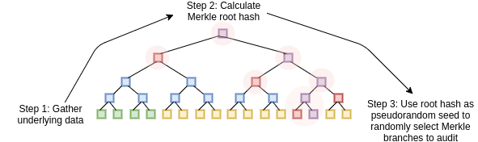
STARKs work by treating the data as a polynomial, computing evaluations of that polynomial across a large number of points, and using the Merkle root of that extended data as the "polynomial commitment"
A key bit of history here is that elliptic curve-based SNARKs came into widespread use first: it took until roughly 2018 for STARKs to become efficient enough to use, thanks to FRI, and by then Zcash had already been running for over a year. Elliptic curve-based SNARKs have a key limitation: if you want to use elliptic curve-based SNARKs, then the arithmetic in these equations must be done with integers modulo the number of points on the elliptic curve. This is a big number, usually near \(2^{256}\): for example, for the bn128 curve, it's 21888242871839275222246405745257275088548364400416034343698204186575808495617. But the actual computation is using small numbers: if you think about a "real" program in your favorite language, most of the stuff it's working with is counters, indices in for loops, positions in the program, individual bits representing True or False, and other things that will almost always be only a few digits long.
Even if your "original" data is made up of "small" numbers, the proving process requires computing quotients, extensions, random linear combinations, and other transformations of the data, which lead to an equal or larger number of objects that are, on average, as large as the full size of your field. This creates a key inefficiency: to prove a computation over n small values, you have to do even more computation over n much bigger values. At first, STARKs inherited the habit of using 256-bit fields from SNARKs, and so suffered the same inefficiency.
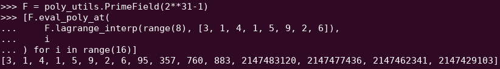
A Reed-Solomon extension of some polynomial evaluations. Even though the original values are small, the extra values all blow up to the full size of the field (in this case \(2^{31} - 1\)).
In 2022, Plonky2 was released. Plonky2's main innovation was doing arithmetic modulo a smaller prime: \(2^{64} - 2^{32} + 1 = 18446744069414584321\). Now, each addition or multiplication can always be done in just a few instructions on a CPU, and hashing all of the data together is 4x faster than before. But this comes with a catch: this approach is STARK-only. If you try to use a SNARK, with an elliptic curve of such a small size, the elliptic curve becomes insecure.
To continue to be safe, Plonky2 also needed to introduce extension fields. A key technique in checking arithmetic equations is "sampling at a random point": if you want to check if \(H(x) * Z(x)\) actually equals \(F(x+2) - F(x+1) - F(x)\), you can pick some random coordinate \(r\), provide polynomial commitment opening proofs proving \(H(r)\), \(Z(r)\), \(F(r)\), \(F(r+1)\) and \(F(r+2)\), and then actually check if \(H(r) * Z(r)\) equals \(F(r+2) - F(r+1) - F(r)\). If the attacker can guess the coordinate ahead of time, the attacker can trick the proof system - hence why it must be random. But this also means that the coordinate must be sampled from a set large enough that the attacker cannot guess it by random chance. If the modulus is near \(2^{256}\), this is clearly the case. But with a modulus of \(2^{64} - 2^{32} + 1\), we're not quite there, and if we drop to \(2^{31} - 1\), it's definitely not the case. Trying to fake a proof two billion times until one gets lucky is absolutely within the range of an attacker's capabilities.
To stop this, we sample \(r\) from an extension field. For example, you can define \(y\) where \(y^3 = 5\), and take combinations of \(1\), \(y\) and \(y^2\). This increases the total number of coordinates back up to roughly \(2^{93}\). The bulk of the polynomials computed by the prover don't go into this extension field; they just use integers modulo \(2^{31}-1\), and so you still get all the efficiencies from using the small field. But the random point check, and the FRI computation, does dive into this larger field, in order to get the needed security.
From small primes to binary
Computers do arithmetic by representing larger numbers as sequences of zeroes and ones, and building "circuits" on top of those bits to compute things like addition and multiplication. Computers are particularly optimized for doing computation with 16-bit, 32-bit and 64-bit integers. Moduluses like \(2^{64} - 2^{32} + 1\) and \(2^{31} - 1\) are chosen not just because they fit within those bounds, but also because they align well with those bounds: you can do multiplication modulo \(2^{64} - 2^{32} + 1\) by doing regular 32-bit multiplication, and shift and copy the outputs bitwise in a few places; this article explains some of the tricks well.
What would be even better, however, is doing computation in binary directly. What if addition could be "just" XOR, with no need to worry about "carrying" the overflow from adding 1 + 1 in one bit position to the next bit position? What if multiplication could be more parallelizable in the same way? And these advantages would all come on top of being able to represent True/False values with just one bit.
Capturing these advantages of doing binary computation directly is exactly what Binius is trying to do. A table from the Binius team's zkSummit presentation shows the efficiency gains:
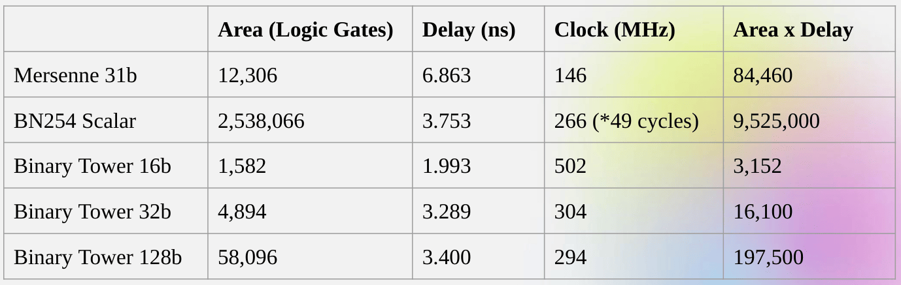
Despite being roughly the same "size", a 32-bit binary field operation takes 5x less computational resources than an operation over the 31-bit Mersenne field.
From univariate polynomials to hypercubes
Suppose that we are convinced by this reasoning, and want to do everything over bits (zeroes and ones). How do we actually commit to a polynomial representing a billion bits?
Here, we face two practical problems:
- For a polynomial to represent a lot of values, those values need to be accessible at evaluations of the polynomial: in our Fibonacci example above, \(F(0)\), \(F(1)\) ... \(F(100)\), and in a bigger computation, the indices would go into the millions. And the field that we use needs to contain numbers going up to that size.
- Proving anything about a value that we're committing to in a Merkle tree (as all STARKs do) requires Reed-Solomon encoding it: extending \(n\) values into eg. \(8n\) values, using the redundancy to prevent a malicious prover from cheating by faking one value in the middle of the computation. This also requires having a large enough field: to extend a million values to 8 million, you need 8 million different points at which to evaluate the polynomial.
A key idea in Binius is solving these two problems separately, and doing so by representing the same data in two different ways. First, the polynomial itself. Elliptic curve-based SNARKs, 2019-era STARKs, Plonky2 and other systems generally deal with polynomials over one variable: \(F(x)\). Binius, on the other hand, takes inspiration from the Spartan protocol, and works with multivariate polynomials: \(F(x_1, x_2 ... x_k)\). In fact, we represent the entire computational trace on the "hypercube" of evaluations where each \(x_i\) is either 0 or 1. For example, if we wanted to represent a sequence of Fibonacci numbers, and we were still using a field large enough to represent them, we might visualize the first sixteen of them as being something like this:

That is, \(F(0,0,0,0)\) would be 1, \(F(1,0,0,0)\) would also be 1, \(F(0,1,0,0)\) would be 2, and so forth, up until we get to \(F(1,1,1,1) = 987\). Given such a hypercube of evaluations, there is exactly one multilinear (degree-1 in each variable) polynomial that produces those evaluations. So we can think of that set of evaluations as representing the polynomial; we never actually need to bother computing the coefficients.
This example is of course just for illustration: in practice, the whole point of going to a hypercube is to let us work with individual bits. The "Binius-native" way to count Fibonacci numbers would be to use a higher-dimensional cube, using each set of eg. 16 bits to store a number. This requires some cleverness to implement integer addition on top of the bits, but with Binius it's not too difficult.
Now, we get to the erasure coding. The way STARKs work is: you take \(n\) values, Reed-Solomon extend them to a larger number of values (often \(8n\), usually between \(2n\) and \(32n\)), and then randomly select some Merkle branches from the extension and perform some kind of check on them. A hypercube has length 2 in each dimension. Hence, it's not practical to extend it directly: there's not enough "space" to sample Merkle branches from 16 values. So what do we do instead? We pretend the hypercube is a square!
Simple Binius - an example
See here for a python implementation of this protocol.
Let's go through an example, using regular integers as our field for convenience (in a real implementation this will be binary field elements). First, we take the hypercube we want to commit to, and encode it as a square:
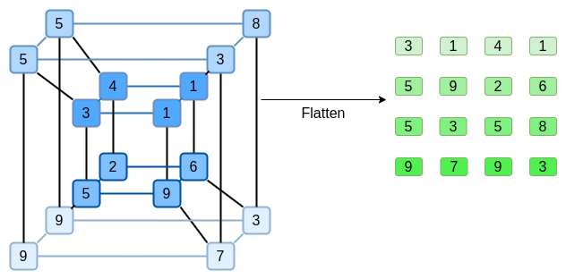
Now, we Reed-Solomon extend the square. That is, we treat each row as being a degree-3 polynomial evaluated at x = {0, 1, 2, 3}, and evaluate the same polynomial at x = {4, 5, 6, 7}:

Notice that the numbers blow up quickly! This is why in a real implementation, we always use a finite field for this, instead of regular integers: if we used integers modulo 11, for example, the extension of the first row would just be [3, 10, 0, 6].
If you want to play around with extending and verify the numbers here for yourself, you can use my simple Reed-Solomon extension code here.
Next, we treat this extension as columns, and make a Merkle tree of the columns. The root of the Merkle tree is our commitment.
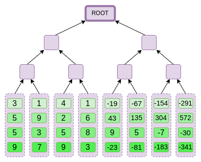
Now, let's suppose that the prover wants to prove an evaluation of this polynomial at some point \(r = \{r_0, r_1, r_2, r_3\}\). There is one nuance in Binius that makes it somewhat weaker than other polynomial commitment schemes: the prover should not know, or be able to guess, \(s\), until after they committed to the Merkle root (in other words, \(r\) should be a pseudo-random value that depends on the Merkle root). This makes the scheme useless for "database lookup" (eg. "ok you gave me the Merkle root, now prove to me \(P(0, 0, 1, 0)\)!"). But the actual zero-knowledge proof protocols that we use generally don't need "database lookup"; they simply need to check the polynomial at a random evaluation point. Hence, this restriction is okay for our purposes.
Suppose we pick \(r = \{1, 2, 3, 4\}\) (the polynomial, at this point, evaluates to \(-137\); you can confirm it with this code). Now, we get into the process of actually making the proof. We split up \(r\) into two parts: the first part \(\{1, 2\}\) representing a linear combination of columns within a row, and the second part \(\{3, 4\}\) representing a linear combination of rows. We compute a "tensor product", both for the column part:
\[\bigotimes_{i=0}^1 (1 - r_i, r_i)\]
And for the row part:
\[\bigotimes_{i=2}^3 (1 - r_i, r_i)\]
What this means is: a list of all possible products of one value from each set. In the row case, we get:
\[[(1 - r_2) * (1 - r_3), r_2 * (1 - r_3), (1 - r_2) * r_3, r_2 * r_3]\]
Using \(r = \{1, 2, 3, 4\}\) (so \(r_2 = 3\) and \(r_3 = 4\)):
\[
[(1 - 3) * (1 - 4), 3 * (1 - 4), (1 - 3) * 4, 3 * 4] \\
= [6, -9, -8, 12]\]
Now, we compute a new "row" \(t'\), by taking this linear combination of the existing rows. That is, we take:
\[\begin{matrix}[3, 1, 4, 1] * 6\ + \\
[5, 9, 2, 6] * (-9)\ + \\
[5, 3, 5, 8] * (-8)\ + \\
[9, 7, 9, 3] * 12 = \\
[41, -15, 74, -76]
\end{matrix}\]
You can view what's going on here as a partial evaluation. If we were to multiply the full tensor product \(\bigotimes_{i=0}^3 (1 - r_i, r_i)\) by the full vector of all values, you would get the evaluation \(P(1, 2, 3, 4) = -137\). Here we're multiplying a partial tensor product that only uses half the evaluation coordinates, and we're reducing a grid of \(N\) values to a row of \(\sqrt{N}\) values. If you give this row to someone else, they can use the tensor product of the other half of the evaluation coordinates to complete the rest of the computation.
The prover provides the verifier with this new row, \(t'\), as well as the Merkle proofs of some randomly sampled columns. This is \(O(\sqrt{N})\) data. In our illustrative example, we'll have the prover provide just the last column; in real life, the prover would need to provide a few dozen columns to achieve adequate security.
Now, we take advantage of the linearity of Reed-Solomon codes. The key property that we use is: taking a linear combination of a Reed-Solomon extension gives the same result as a Reed-Solomon extension of a linear combination. This kind of "order independence" often happens when you have two operations that are both linear.
The verifier does exactly this. They compute the extension of \(t'\), and they compute the same linear combination of columns that the prover computed before (but only to the columns provided by the prover), and verify that these two procedures give the same answer.

In this case, extending \(t'\), and computing the same linear combination (\([6, -9, -8, 12]\)) of the column, both give the same answer: \(-10746\). This proves that the Merkle root was constructed "in good faith" (or it at least "close enough"), and it matches \(t'\): at least the great majority of the columns are compatible with each other and with \(t'\).
But the verifier still needs to check one more thing: actually check the evaluation of the polynomial at \(\{r_0 .. r_3\}\). So far, none of the verifier's steps actually depended on the value that the prover claimed. So here is how we do that check. We take the tensor product of what we labelled as the "column part" of the evaluation point:
\[\bigotimes_{i=0}^1 (1 - r_i, r_i)\]
In our example, where \(r = \{1, 2, 3, 4\}\) (so the half that chooses the column is \(\{1, 2\}\)), this equals:
\[
[(1 - 1) * (1 - 2), 1 * (1 - 2), (1 - 1) * 2, 1 * 2] \\
= [0, -1, 0, 2]\]
So now we take this linear combination of \(t'\):
\[
0 * 41 + (-1) * (-15) + 0 * 74 + 2 * (-76) = -137
\]
Which exactly equals the answer you get if you evaluate the polynomial directly.
The above is pretty close to a complete description of the "simple" Binius protocol. This already has some interesting advantages: for example, because the data is split into rows and columns, you only need a field half the size. But this doesn't come close to realizing the full benefits of doing computation in binary. For this, we will need the full Binius protocol. But first, let's get a deeper understanding of binary fields.
Binary fields
The smallest possible field is arithmetic modulo 2, which is so small that we can write out its addition and multiplication tables:
We can make larger binary fields by taking extensions: if we start with \(F_2\) (integers modulo 2) and then define \(x\) where \(x^2 = x + 1\), we get the following addition and multiplication tables:
| 0 |
0 |
1 |
x |
x+1 |
| 1 |
1 |
0 |
x+1 |
x |
| x |
x |
x+1 |
0 |
1 |
| x+1 |
x+1 |
x |
1 |
0 |
|
| 0 |
0 |
0 |
0 |
0 |
| 1 |
0 |
1 |
x |
x+1 |
| x |
0 |
x |
x+1 |
1 |
| x+1 |
0 |
x+1 |
1 |
x |
|
It turns out that we can expand the binary field to arbitrarily large sizes by repeating this construction. Unlike with complex numbers over reals, where you can add one new element \(i\), but you can't add any more (quaternions do exist, but they're mathematically weird, eg. \(ab \neq ba\)), with finite fields you can keep adding new extensions forever. Specifically, we define elements as follows:
- \(x_0\) satisfies \(x_0^2 = x_0 + 1\)
- \(x_1\) satisfies \(x_1^2 = x_1x_0 + 1\)
- \(x_2\) satisfies \(x_2^2 = x_2x_1 + 1\)
- \(x_3\) satisfies \(x_3^2 = x_3x_2 + 1\)
And so on. This is often called the tower construction, because of how each successive extension can be viewed as adding a new layer to a tower. This is not the only way to construct binary fields of arbitary size, but it has some unique advantages that Binius takes advantage of.
We can represent these numbers as a list of bits, eg. \(\texttt{1100101010001111}\). The first bit represents multiples of 1, the second bit represents multiples of \(x_0\), then subsequent bits represent multiples of: \(x_1\), \(x_1 * x_0\), \(x_2\), \(x_2 * x_0\), and so forth. This encoding is nice because you can decompose it:
\(\texttt{1100101010001111} = \texttt{11001010} + \texttt{10001111} * x_3\) \(= \texttt{1100} + \texttt{1010} * x_2 + \texttt{1000} * x_3 + \texttt{1111} * x_2x_3\) \(= \texttt{11} + \texttt{10} * x_2 + \texttt{10} * x_2x_1 + \texttt{10} * x_3 + \texttt{11} * x_2x_3 + \texttt{11} * x_1x_2x_3\) \(= 1 + x_0 + x_2 + x_2x_1 + x_3 + x_2x_3 + x_0x_2x_3 + x_1x_2x_3 + x_0x_1x_2x_3\)
This is a relatively uncommon notation, but I like representing binary field elements as integers, taking the bit representation where more-significant bits are to the right. That is, \(\texttt{1} = 1\), \(x_0 = \texttt{01} = 2\), \(1 + x_0 = \texttt{11} = 3\), \(1 + x_0 + x_2 = \texttt{11001000} = 19\), and so forth. \(\texttt{1100101010001111}\) is, in this representation, 61779.
Addition in binary fields is just XOR (and, incidentally, so is subtraction); note that this implies that \(x + x = 0\) for any \(x\). To multiply two elements \(x * y\), there's a pretty simple recursive algorithm: split each number into two halves:
\(x = L_x + R_x * x_k\) \(y = L_y + R_y * x_k\)
Then, split up the multiplication:
\(x * y = (L_x * L_y) + (L_x * R_y) * x_k + (R_x * L_y) * x_k + (R_x * R_y) * x_k^2\)
The last piece is the only slightly tricky one, because you have to apply the reduction rule, and replace \(R_x * R_y * x_k^2\) with \(R_x * R_y * (x_{k-1} * x_k + 1)\). There are more efficient ways to do multiplication, analogues of the Karatsuba algorithm and fast Fourier transforms, but I will leave it as an exercise to the interested reader to figure those out.
Division in binary fields is done by combining multiplication and inversion: \(\frac{3}{5} = 3 * \frac{1}{5}\). The "simple but slow" way to do inversion is an application of generalized Fermat's little theorem: \(\frac{1}{x} = x^{2^{2^k}-2}\) for any \(k\) where \(2^{2^k} > x\). In this case, \(\frac{1}{5} = 5^{14} = 14\), and so \(\frac{3}{5} = 3 * 14 = 9\). There is also a more complicated but more efficient inversion algorithm, which you can find here. You can use the code here to play around with binary field addition, multiplication and division yourself.
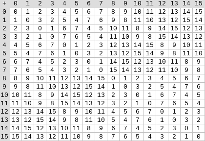 
Left: addition table for four-bit binary field elements (ie. elements made up only of combinations of \(1\), \(x_0\), \(x_1\) and \(x_0x_1\)). Right: multiplication table for four-bit binary field elements.
The beautiful thing about this type of binary field is that it combines some of the best parts of "regular" integers and modular arithmetic. Like regular integers, binary field elements are unbounded: you can keep extending as far as you want. But like modular arithmetic, if you do operations over values within a certain size limit, all of your answers also stay within the same bound. For example, if you take successive powers of \(42\), you get:
\[1, 42, 199, 215, 245, 249, 180, 91...\]
And after 255 steps, you get right back to \(42^{255} = 1\). And like both regular integers and modular arithmetic, they obey the usual laws of mathematics: \(a*b = b*a\), \(a * (b+c) = a*b + a*c\), and even some strange new laws, eg. \(a^2 + b^2 = (a+b)^2\) (the usual \(2ab\) term is missing, because in a binary field, \(1 + 1 = 0\)).
And finally, binary fields work conveniently with bits: if you do math with numbers that fit into \(2^k\) bits, then all of your outputs will also fit into \(2^k\) bits. This avoids awkwardness like eg. with Ethereum's EIP-4844, where the individual "chunks" of a blob have to be numbers modulo 52435875175126190479447740508185965837690552500527637822603658699938581184513, and so encoding binary data involves throwing away a bit of space and doing extra checks at the application layer to make sure that each element is storing a value less than \(2^{248}\). It also means that binary field arithmetic is super fast on computers - both CPUs, and theoretically optimal FPGA and ASIC designs.
This all means that we can do things like the Reed-Solomon encoding that we did above, in a way that completely avoids integers "blowing up" like we saw in our example, and in a way that is extremely "native" to the kind of calculation that computers are good at. The "splitting" property of binary fields - how we were able to do \(\texttt{1100101010001111} = \texttt{11001010} + \texttt{10001111} * x_3\), and then keep splitting as little or as much as we wanted, is also crucial for enabling a lot of flexibility.
Full Binius
See here for a python implementation of this protocol.
Now, we can get to "full Binius", which adjusts "simple Binius" to (i) work over binary fields, and (ii) let us commit to individual bits. This protocol is tricky to understand, because it keeps going back and forth between different ways of looking at a matrix of bits; it certainly took me longer to understand than it usually takes me to understand a cryptographic protocol. But once you understand binary fields, the good news is that there isn't any "harder math" that Binius depends on. This is not elliptic curve pairings, where there are deeper and deeper rabbit holes of algebraic geometry to go down; here, binary fields are all you need.
Let's look again at the full diagram:
By now, you should be familiar with most of the components. The idea of "flattening" a hypercube into a grid, the idea of computing a row combination and a column combination as tensor products of the evaluation point, and the idea of checking equivalence between "Reed-Solomon extending then computing the row combination", and "computing the row combination then Reed-Solomon extending", were all in simple Binius.
What's new in "full Binius"? Basically three things:
- The individual values in the hypercube, and in the square, have to be bits (0 or 1)
- The extension process extends bits into more bits, by grouping bits into columns and temporarily pretending that they are larger field elements
- After the row combination step, there's an element-wise "decompose into bits" step, which converts the extension back into bits
We will go through both in turn. First, the new extension procedure. A Reed-Solomon code has the fundamental limitation that if you are extending \(n\) values to \(k*n\) values, you need to be working in a field that has \(k*n\) different values that you can use as coordinates. With \(F_2\) (aka, bits), you cannot do that. And so what we do is, we "pack" adjacent \(F_2\) elements together into larger values. In the example here, we're packing two bits at a time into elements in \(\{0, 1, 2, 3\}\), because our extension only has four evaluation points and so that's enough for us. In a "real" proof, we would probably back 16 bits at a time together. We then do the Reed-Solomon code over these packed values, and unpack them again into bits.
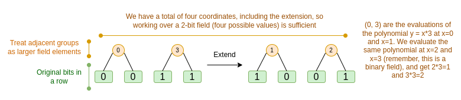
Now, the row combination. To make "evaluate at a random point" checks cryptographically secure, we need that point to be sampled from a pretty large space, much larger than the hypercube itself. Hence, while the points within the hypercube are bits, evaluations outside the hypercube will be much larger. In our example above, the "row combination" ends up being \([11, 4, 6, 1]\).
This presents a problem: we know how to combine pairs of bits into a larger value, and then do a Reed-Solomon extension on that, but how do you do the same to pairs of much larger values?
The trick in Binius is to do it bitwise: we look at the individual bits of each value (eg. for what we labeled as "11", that's \([1, 1, 0, 1]\)), and then we extend row-wise. That is, we perform the extension procedure on the \(1\) row of each element, then on the \(x_0\) row, then on the "\(x_1\)" row, then on the \(x_0 * x_1\) row, and so forth (well, in our toy example we stop there, but in a real implementation we would go up to 128 rows (the last one being \(x_6 *\ ... *\ x_0\))).
Recapping:
- We take the bits in the hypercube, and convert them into a grid
- Then, we treat adjacent groups of bits on each row as larger field elements, and do arithmetic on them to Reed-Solomon extend the rows
- Then, we take a row combination of each column of bits, and get a (for squares larger than 4x4, much smaller) column of bits for each row as the output
- Then, we look at the output as a matrix, and treat the bits of that as rows again
Why does this work? In "normal" math, the ability to (often) do linear operations in either order and get the same result stops working if you start slicing a number up by digits. For example, if I start with the number 345, and I multiply it by 8 and then by 3, I get 8280, and if do those two operations in reverse, I also do 8280. But if I insert a "split by digit" operation in between the two steps, it breaks down: if you do 8x then 3x, you get:
\[345 \xrightarrow{\times 8} 2760 \rightarrow [2, 7, 6, 0] \xrightarrow{\times 3} [6, 21, 18, 0]\]
But if you do 3x then 8x, you get:
\[345 \xrightarrow{\times 3} 1035 \rightarrow [1, 0, 3, 5] \xrightarrow{\times 8} [8, 0, 24, 40]\]
But in binary fields built with the tower construction, this kind of thing does work. The reason why has to do with their separability: if you multiply a big value by a small value, what happens in each segment, stays in each segment. If we multiply \(\texttt{1100101010001111}\) by \(\texttt{11}\), that's the same as first decomposing \(\texttt{1100101010001111}\) into \(\texttt{11} + \texttt{10} * x_2 + \texttt{10} * x_2x_1 + \texttt{10} * x_3 + \texttt{11} * x_2x_3 + \texttt{11} * x_1x_2x_3\), and then multiplying each component by \(\texttt{11}\) separately.
Putting it all together
Generally, zero knowledge proof systems work by making statements about polynomials that simultaneously represent statements about the underlying evaluations: just like we saw in the Fibonacci example, \(F(X+2) - F(X+1) - F(X) = Z(X) * H(X)\) simultaneously checks all steps of the Fibonacci computation. We check statements about polynomials by proving evaluations at a random point: given a commitment to \(F\), you might randomly choose eg. 1892470, demand proofs of evaluations of \(F\), \(Z\) and \(H\) at that point (and \(H\) at adjacent points), check those proofs, and then check if \(F(1892472) - F(1892471) - F(1892470)\) \(= Z(1892470) * H(1892470)\). This check at a random point stands in for checking the whole polynomial: if the polynomial equation doesn't match, the chance that it matches at a specific random coordinate is tiny.
In practice, a major source of inefficiency comes from the fact that in real programs, most of the numbers we are working with are tiny: indices in for loops, True/False values, counters, and similar things. But when we "extend" the data using Reed-Solomon encoding to give it the redundancy needed to make Merkle proof-based checks safe, most of the "extra" values end up taking up the full size of a field, even if the original values are small.
To get around this, we want to make the field as small as possible. Plonky2 brought us down from 256-bit numbers to 64-bit numbers, and then Plonky3 went further to 31 bits. But even this is sub-optimal. With binary fields, we can work over individual bits. This makes the encoding "dense": if your actual underlying data has n bits, then your encoding will have n bits, and the extension will have 8 * n bits, with no extra overhead.
Now, let's look at the diagram a third time:
In Binius, we are committing to a multilinear polynomial: a hypercube \(P(x_0, x_1 ... x_k)\), where the individual evaluations \(P(0, 0 ... 0)\), \(P(0, 0 ... 1)\) up to \(P(1, 1, ... 1)\) are holding the data that we care about. To prove an evaluation at a point, we "re-interpret" the same data as a square. We then extend each row, using Reed-Solomon encoding over groups of bits, to give the data the redundancy needed for random Merkle branch queries to be secure. We then compute a random linear combination of rows, with coefficients designed so that the new combined row actually holds the evaluation that we care about. Both this newly-created row (which get re-interpreted as 128 rows of bits), and a few randomly-selected columns with Merkle branches, get passed to the verifier. This is \(O(\sqrt{N})\) data: the new row has \(O(\sqrt{N})\) size, and each of the (constant number of) columns that get passed has \(O(\sqrt{N})\) size.
The verifier then does a "row combination of the extension" (or rather, a few columns of the extension), and an "extension of the row combination", and verifies that the two match. They then compute a column combination, and check that it returns the value that the prover is claiming. And there's our proof system (or rather, the polynomial commitment scheme, which is the key building block of a proof system).
What did we not cover?
- Efficient algorithms to extend the rows, which are needed to actually make the computational efficiency of the verifier \(O(\sqrt{N})\). With naive Lagrange interpolation, we can only get \(O(N^{\frac{2}{3}})\). For this, we use Fast Fourier transforms over binary fields, described here (though the exact implementation will be different, because this post uses a less efficient construction not based on recursive extension).
- Arithmetization. Univariate polynomials are convenient because you can do things like \(F(X+2) - F(X+1) - F(X) = Z(X) * H(X)\) to relate adjacent steps in the computation. In a hypercube, the interpretation of "the next step" is not nearly as clean as "\(X + 1\)". You can do \(X * k\) and jump around powers of \(k\), but this jumping around behavior would sacrifice many of the key advantages of Binius. The Binius paper introduces solutions to this (eg. see Section 4.3), but this is a "deep rabbit hole" in its own right.
- How to actually safely do specific-value checks. The Fibonacci example required checking key boundary conditions: \(F(0) = F(1) = 1\), and the value of \(F(100)\). But with "raw" Binius, checking at pre-known evaluation points is insecure. There are fairly simple ways to convert a known-evaluation check into an unknown-evaluation check, using what are called sum-check protocols; but we did not get into those here.
- Lookup protocols, another technology which has been recently gaining usage as a way to make ultra-efficient proving systems. Binius can be combined with lookup protocols for many applications.
- Going beyond square-root verification time. Square root is expensive: a Binius proof of \(2^{32}\) bits is about 11 MB long. You can remedy this using some other proof system to make a "proof of a Binius proof", thus gaining both Binius's efficiency in proving the main statement and a small proof size. Another option is the much more complicated FRI-Binius protocol, which creates a poly-logarithmic-sized proof (like regular FRI).
- How Binius affects what counts as "SNARK-friendly". The basic summary is that, if you use Binius, you no longer need to care much about making computation "arithmetic-friendly": "regular" hashes are no longer more efficient than traditional arithmetic hashes, multiplication modulo \(2^{32}\) or modulo \(2^{256}\) is no longer a big headache compared to multiplication modulo \(p\), and so forth. But this is a complicated topic; lots of things change when everything is done in binary.
I expect many more improvements in binary-field-based proving techniques in the months ahead.
Binius: highly efficient proofs over binary fields
2024 Apr 29 See all postsThis post is primarily intended for readers roughly familiar with 2019-era cryptography, especially SNARKs and STARKs. If you are not, I recommend reading those articles first. Special thanks to Justin Drake, Jim Posen, Benjamin Diamond and Radi Cojbasic for feedback and review.
Over the past two years, STARKs have become a crucial and irreplaceable technology for efficiently making easy-to-verify cryptographic proofs of very complicated statements (eg. proving that an Ethereum block is valid). A key reason why is small field sizes: whereas elliptic curve-based SNARKs require you to work over 256-bit integers in order to be secure enough, STARKs let you use much smaller field sizes, which are more efficient: first the Goldilocks field (64-bit integers), and then Mersenne31 and BabyBear (both 31-bit). Thanks to these efficiency gains, Plonky2, which uses Goldilocks, is hundreds of times faster at proving many kinds of computation than its predecessors.
A natural question to ask is: can we take this trend to its logical conclusion, building proof systems that run even faster by operating directly over zeroes and ones? This is exactly what Binius is trying to do, using a number of mathematical tricks that make it very different from the SNARKs and STARKs of three years ago. This post goes through the reasons why small fields make proof generation more efficient, why binary fields are uniquely powerful, and the tricks that Binius uses to make proofs over binary fields work so effectively.
Binius. By the end of this post, you should be able to understand every part of this diagram.
Table of contents
Recap: finite fields
One of the key tasks of a cryptographic proving system is to operate over huge amounts of data, while keeping the numbers small. If you can compress a statement about a large program into a mathematical equation involving a few numbers, but those numbers are as big as the original program, you have not gained anything.
To do complicated arithmetic while keeping numbers small, cryptographers generally use modular arithmetic. We pick some prime "modulus"
p. The % operator means "take the remainder of": \(15\ \%\ 7 = 1\), \(53\ \%\ 10 = 3\), etc (note that the answer is always non-negative, so for example \(-1\ \%\ 10 = 9\)).You've probably already seen modular arithmetic, in the context of adding and subtracting time (eg. what time is four hours after 9:00?). But here, we don't just add and subtract modulo some number, we also multiply, divide and take exponents.
We redefine:
\(x + y \Rightarrow (x + y)\) % \(p\)
\(x * y \Rightarrow (x * y)\) % \(p\)
\(x^y \Rightarrow (x^y)\) % \(p\)
\(x - y \Rightarrow (x - y)\) % \(p\)
\(x / y \Rightarrow (x * y ^{p-2})\) % \(p\)
The above rules are all self-consistent. For example, if \(p = 7\), then:
A more general term for this kind of structure is a finite field. A finite field is a mathematical structure that obeys the usual laws of arithmetic, but where there's a limited number of possible values, and so each value can be represented in a fixed size.
Modular arithmetic (or prime fields) is the most common type of finite field, but there is also another type: extension fields. You've probably already seen an extension field before: the complex numbers. We "imagine" a new element, which we label \(i\), and declare that it satisfies \(i^2 = -1\). You can then take any combination of regular numbers and \(i\), and do math with it: \((3i+2) * (2i + 4) =\) \(6i^2 + 12i + 4i + 8 = 16i + 2\). We can similarly take extensions of prime fields. As we start working over fields that are smaller, extensions of prime fields become increasingly important for preserving security, and binary fields (which Binius uses) depend on extensions entirely to have practical utility.
Recap: arithmetization
The way that SNARKs and STARKs prove things about computer programs is through arithmetization: you convert a statement about a program that you want to prove, into a mathematical equation involving polynomials. A valid solution to the equation corresponds to a valid execution of the program.
To give a simple example, suppose that I computed the 100'th Fibonacci number, and I want to prove to you what it is. I create a polynomial \(F\) that encodes Fibonacci numbers: so \(F(0) = F(1) = 1\), \(F(2) = 2\), \(F(3) = 3\), \(F(4) = 5\), and so on for 100 steps. The condition that I need to prove is that \(F(x+2) = F(x) + F(x+1)\) across the range \(x = \{0, 1 ... 98\}\). I can convince you of this by giving you the quotient:
\[H(x) = \frac{F(x+2) - F(x+1) - F(x)}{Z(x)}\]
Where \(Z(x) = (x - 0) * (x - 1) * ... * (x - 98)\). If I can provide valid \(F\) and \(H\) that satisfy this equation, then \(F\) must satisfy \(F(x+2) - F(x+1) - F(x)\) across that range. If I additionally verify that \(F\) satisfies \(F(0) = F(1) = 1\), then \(F(100)\) must actually be the 100th Fibonacci number.
If you want to prove something more complicated, then you replace the "simple" relation \(F(x+2) = F(x) + F(x+1)\) with a more complicated equation, which basically says "\(F(x+1)\) is the output of initializing a virtual machine with the state \(F(x)\), and running one computational step". You can also replace the number 100 with a bigger number, eg. 100000000, to accommodate more steps.
All SNARKs and STARKs are based on this idea of using a simple equation over polynomials (or sometimes vectors and matrices) to represent a large number of relationships between individual values. Not all involve checking equivalence between adjacent computational steps in the same way as above: PLONK does not, for example, and neither does R1CS. But many of the most efficient ones do, because enforcing the same check (or the same few checks) many times makes it easier to minimize overhead.
Plonky2: from 256-bit SNARKs and STARKs to 64-bit... only STARKs
Five years ago, a reasonable summary of the different types of zero knowledge proof was as follows. There are two types of proofs: (elliptic-curve-based) SNARKs and (hash-based) STARKs. Technically, STARKs are a type of SNARK, but in practice it's common to use "SNARK" to refer to only the elliptic-curve-based variety, and "STARK" to refer to hash-based constructions. SNARKs are small, and so you can verify them very quickly and fit them onchain easily. STARKs are big, but they don't require trusted setups, and they are quantum-resistant.
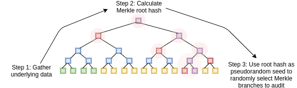
STARKs work by treating the data as a polynomial, computing evaluations of that polynomial across a large number of points, and using the Merkle root of that extended data as the "polynomial commitment"
A key bit of history here is that elliptic curve-based SNARKs came into widespread use first: it took until roughly 2018 for STARKs to become efficient enough to use, thanks to FRI, and by then Zcash had already been running for over a year. Elliptic curve-based SNARKs have a key limitation: if you want to use elliptic curve-based SNARKs, then the arithmetic in these equations must be done with integers modulo the number of points on the elliptic curve. This is a big number, usually near \(2^{256}\): for example, for the bn128 curve, it's 21888242871839275222246405745257275088548364400416034343698204186575808495617. But the actual computation is using small numbers: if you think about a "real" program in your favorite language, most of the stuff it's working with is counters, indices in for loops, positions in the program, individual bits representing True or False, and other things that will almost always be only a few digits long.
Even if your "original" data is made up of "small" numbers, the proving process requires computing quotients, extensions, random linear combinations, and other transformations of the data, which lead to an equal or larger number of objects that are, on average, as large as the full size of your field. This creates a key inefficiency: to prove a computation over
nsmall values, you have to do even more computation overnmuch bigger values. At first, STARKs inherited the habit of using 256-bit fields from SNARKs, and so suffered the same inefficiency.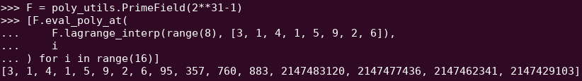
A Reed-Solomon extension of some polynomial evaluations. Even though the original values are small, the extra values all blow up to the full size of the field (in this case \(2^{31} - 1\)).
In 2022, Plonky2 was released. Plonky2's main innovation was doing arithmetic modulo a smaller prime: \(2^{64} - 2^{32} + 1 = 18446744069414584321\). Now, each addition or multiplication can always be done in just a few instructions on a CPU, and hashing all of the data together is 4x faster than before. But this comes with a catch: this approach is STARK-only. If you try to use a SNARK, with an elliptic curve of such a small size, the elliptic curve becomes insecure.
To continue to be safe, Plonky2 also needed to introduce extension fields. A key technique in checking arithmetic equations is "sampling at a random point": if you want to check if \(H(x) * Z(x)\) actually equals \(F(x+2) - F(x+1) - F(x)\), you can pick some random coordinate \(r\), provide polynomial commitment opening proofs proving \(H(r)\), \(Z(r)\), \(F(r)\), \(F(r+1)\) and \(F(r+2)\), and then actually check if \(H(r) * Z(r)\) equals \(F(r+2) - F(r+1) - F(r)\). If the attacker can guess the coordinate ahead of time, the attacker can trick the proof system - hence why it must be random. But this also means that the coordinate must be sampled from a set large enough that the attacker cannot guess it by random chance. If the modulus is near \(2^{256}\), this is clearly the case. But with a modulus of \(2^{64} - 2^{32} + 1\), we're not quite there, and if we drop to \(2^{31} - 1\), it's definitely not the case. Trying to fake a proof two billion times until one gets lucky is absolutely within the range of an attacker's capabilities.
To stop this, we sample \(r\) from an extension field. For example, you can define \(y\) where \(y^3 = 5\), and take combinations of \(1\), \(y\) and \(y^2\). This increases the total number of coordinates back up to roughly \(2^{93}\). The bulk of the polynomials computed by the prover don't go into this extension field; they just use integers modulo \(2^{31}-1\), and so you still get all the efficiencies from using the small field. But the random point check, and the FRI computation, does dive into this larger field, in order to get the needed security.
From small primes to binary
Computers do arithmetic by representing larger numbers as sequences of zeroes and ones, and building "circuits" on top of those bits to compute things like addition and multiplication. Computers are particularly optimized for doing computation with 16-bit, 32-bit and 64-bit integers. Moduluses like \(2^{64} - 2^{32} + 1\) and \(2^{31} - 1\) are chosen not just because they fit within those bounds, but also because they align well with those bounds: you can do multiplication modulo \(2^{64} - 2^{32} + 1\) by doing regular 32-bit multiplication, and shift and copy the outputs bitwise in a few places; this article explains some of the tricks well.
What would be even better, however, is doing computation in binary directly. What if addition could be "just" XOR, with no need to worry about "carrying" the overflow from adding 1 + 1 in one bit position to the next bit position? What if multiplication could be more parallelizable in the same way? And these advantages would all come on top of being able to represent True/False values with just one bit.
Capturing these advantages of doing binary computation directly is exactly what Binius is trying to do. A table from the Binius team's zkSummit presentation shows the efficiency gains:
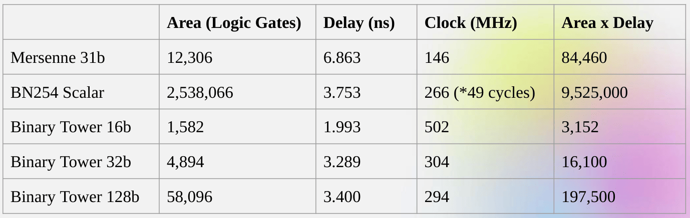
Despite being roughly the same "size", a 32-bit binary field operation takes 5x less computational resources than an operation over the 31-bit Mersenne field.
From univariate polynomials to hypercubes
Suppose that we are convinced by this reasoning, and want to do everything over bits (zeroes and ones). How do we actually commit to a polynomial representing a billion bits?
Here, we face two practical problems:
A key idea in Binius is solving these two problems separately, and doing so by representing the same data in two different ways. First, the polynomial itself. Elliptic curve-based SNARKs, 2019-era STARKs, Plonky2 and other systems generally deal with polynomials over one variable: \(F(x)\). Binius, on the other hand, takes inspiration from the Spartan protocol, and works with multivariate polynomials: \(F(x_1, x_2 ... x_k)\). In fact, we represent the entire computational trace on the "hypercube" of evaluations where each \(x_i\) is either 0 or 1. For example, if we wanted to represent a sequence of Fibonacci numbers, and we were still using a field large enough to represent them, we might visualize the first sixteen of them as being something like this:
That is, \(F(0,0,0,0)\) would be 1, \(F(1,0,0,0)\) would also be 1, \(F(0,1,0,0)\) would be 2, and so forth, up until we get to \(F(1,1,1,1) = 987\). Given such a hypercube of evaluations, there is exactly one multilinear (degree-1 in each variable) polynomial that produces those evaluations. So we can think of that set of evaluations as representing the polynomial; we never actually need to bother computing the coefficients.
This example is of course just for illustration: in practice, the whole point of going to a hypercube is to let us work with individual bits. The "Binius-native" way to count Fibonacci numbers would be to use a higher-dimensional cube, using each set of eg. 16 bits to store a number. This requires some cleverness to implement integer addition on top of the bits, but with Binius it's not too difficult.
Now, we get to the erasure coding. The way STARKs work is: you take \(n\) values, Reed-Solomon extend them to a larger number of values (often \(8n\), usually between \(2n\) and \(32n\)), and then randomly select some Merkle branches from the extension and perform some kind of check on them. A hypercube has length 2 in each dimension. Hence, it's not practical to extend it directly: there's not enough "space" to sample Merkle branches from 16 values. So what do we do instead? We pretend the hypercube is a square!
Simple Binius - an example
See here for a python implementation of this protocol.
Let's go through an example, using regular integers as our field for convenience (in a real implementation this will be binary field elements). First, we take the hypercube we want to commit to, and encode it as a square:
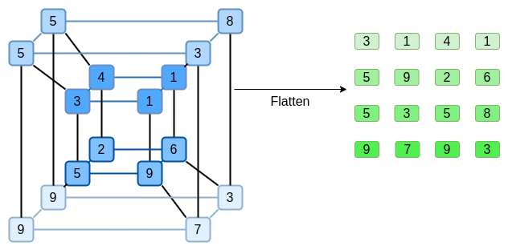
Now, we Reed-Solomon extend the square. That is, we treat each row as being a degree-3 polynomial evaluated at
x = {0, 1, 2, 3}, and evaluate the same polynomial atx = {4, 5, 6, 7}:Notice that the numbers blow up quickly! This is why in a real implementation, we always use a finite field for this, instead of regular integers: if we used integers modulo 11, for example, the extension of the first row would just be
[3, 10, 0, 6].If you want to play around with extending and verify the numbers here for yourself, you can use my simple Reed-Solomon extension code here.
Next, we treat this extension as columns, and make a Merkle tree of the columns. The root of the Merkle tree is our commitment.
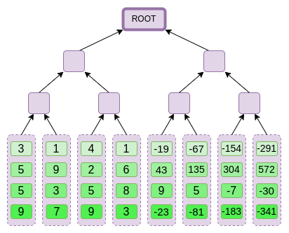
Now, let's suppose that the prover wants to prove an evaluation of this polynomial at some point \(r = \{r_0, r_1, r_2, r_3\}\). There is one nuance in Binius that makes it somewhat weaker than other polynomial commitment schemes: the prover should not know, or be able to guess, \(s\), until after they committed to the Merkle root (in other words, \(r\) should be a pseudo-random value that depends on the Merkle root). This makes the scheme useless for "database lookup" (eg. "ok you gave me the Merkle root, now prove to me \(P(0, 0, 1, 0)\)!"). But the actual zero-knowledge proof protocols that we use generally don't need "database lookup"; they simply need to check the polynomial at a random evaluation point. Hence, this restriction is okay for our purposes.
Suppose we pick \(r = \{1, 2, 3, 4\}\) (the polynomial, at this point, evaluates to \(-137\); you can confirm it with this code). Now, we get into the process of actually making the proof. We split up \(r\) into two parts: the first part \(\{1, 2\}\) representing a linear combination of columns within a row, and the second part \(\{3, 4\}\) representing a linear combination of rows. We compute a "tensor product", both for the column part:
\[\bigotimes_{i=0}^1 (1 - r_i, r_i)\]
And for the row part:
\[\bigotimes_{i=2}^3 (1 - r_i, r_i)\]
What this means is: a list of all possible products of one value from each set. In the row case, we get:
\[[(1 - r_2) * (1 - r_3), r_2 * (1 - r_3), (1 - r_2) * r_3, r_2 * r_3]\]
Using \(r = \{1, 2, 3, 4\}\) (so \(r_2 = 3\) and \(r_3 = 4\)):
\[ [(1 - 3) * (1 - 4), 3 * (1 - 4), (1 - 3) * 4, 3 * 4] \\ = [6, -9, -8, 12]\]
Now, we compute a new "row" \(t'\), by taking this linear combination of the existing rows. That is, we take:
\[\begin{matrix}[3, 1, 4, 1] * 6\ + \\ [5, 9, 2, 6] * (-9)\ + \\ [5, 3, 5, 8] * (-8)\ + \\ [9, 7, 9, 3] * 12 = \\ [41, -15, 74, -76] \end{matrix}\]
You can view what's going on here as a partial evaluation. If we were to multiply the full tensor product \(\bigotimes_{i=0}^3 (1 - r_i, r_i)\) by the full vector of all values, you would get the evaluation \(P(1, 2, 3, 4) = -137\). Here we're multiplying a partial tensor product that only uses half the evaluation coordinates, and we're reducing a grid of \(N\) values to a row of \(\sqrt{N}\) values. If you give this row to someone else, they can use the tensor product of the other half of the evaluation coordinates to complete the rest of the computation.
The prover provides the verifier with this new row, \(t'\), as well as the Merkle proofs of some randomly sampled columns. This is \(O(\sqrt{N})\) data. In our illustrative example, we'll have the prover provide just the last column; in real life, the prover would need to provide a few dozen columns to achieve adequate security.
Now, we take advantage of the linearity of Reed-Solomon codes. The key property that we use is: taking a linear combination of a Reed-Solomon extension gives the same result as a Reed-Solomon extension of a linear combination. This kind of "order independence" often happens when you have two operations that are both linear.
The verifier does exactly this. They compute the extension of \(t'\), and they compute the same linear combination of columns that the prover computed before (but only to the columns provided by the prover), and verify that these two procedures give the same answer.
In this case, extending \(t'\), and computing the same linear combination (\([6, -9, -8, 12]\)) of the column, both give the same answer: \(-10746\). This proves that the Merkle root was constructed "in good faith" (or it at least "close enough"), and it matches \(t'\): at least the great majority of the columns are compatible with each other and with \(t'\).
But the verifier still needs to check one more thing: actually check the evaluation of the polynomial at \(\{r_0 .. r_3\}\). So far, none of the verifier's steps actually depended on the value that the prover claimed. So here is how we do that check. We take the tensor product of what we labelled as the "column part" of the evaluation point:
\[\bigotimes_{i=0}^1 (1 - r_i, r_i)\]
In our example, where \(r = \{1, 2, 3, 4\}\) (so the half that chooses the column is \(\{1, 2\}\)), this equals:
\[ [(1 - 1) * (1 - 2), 1 * (1 - 2), (1 - 1) * 2, 1 * 2] \\ = [0, -1, 0, 2]\]
So now we take this linear combination of \(t'\):
\[ 0 * 41 + (-1) * (-15) + 0 * 74 + 2 * (-76) = -137 \]
Which exactly equals the answer you get if you evaluate the polynomial directly.
The above is pretty close to a complete description of the "simple" Binius protocol. This already has some interesting advantages: for example, because the data is split into rows and columns, you only need a field half the size. But this doesn't come close to realizing the full benefits of doing computation in binary. For this, we will need the full Binius protocol. But first, let's get a deeper understanding of binary fields.
Binary fields
The smallest possible field is arithmetic modulo 2, which is so small that we can write out its addition and multiplication tables:
We can make larger binary fields by taking extensions: if we start with \(F_2\) (integers modulo 2) and then define \(x\) where \(x^2 = x + 1\), we get the following addition and multiplication tables:
It turns out that we can expand the binary field to arbitrarily large sizes by repeating this construction. Unlike with complex numbers over reals, where you can add one new element \(i\), but you can't add any more (quaternions do exist, but they're mathematically weird, eg. \(ab \neq ba\)), with finite fields you can keep adding new extensions forever. Specifically, we define elements as follows:
And so on. This is often called the tower construction, because of how each successive extension can be viewed as adding a new layer to a tower. This is not the only way to construct binary fields of arbitary size, but it has some unique advantages that Binius takes advantage of.
We can represent these numbers as a list of bits, eg. \(\texttt{1100101010001111}\). The first bit represents multiples of 1, the second bit represents multiples of \(x_0\), then subsequent bits represent multiples of: \(x_1\), \(x_1 * x_0\), \(x_2\), \(x_2 * x_0\), and so forth. This encoding is nice because you can decompose it:
\(\texttt{1100101010001111} = \texttt{11001010} + \texttt{10001111} * x_3\) \(= \texttt{1100} + \texttt{1010} * x_2 + \texttt{1000} * x_3 + \texttt{1111} * x_2x_3\) \(= \texttt{11} + \texttt{10} * x_2 + \texttt{10} * x_2x_1 + \texttt{10} * x_3 + \texttt{11} * x_2x_3 + \texttt{11} * x_1x_2x_3\) \(= 1 + x_0 + x_2 + x_2x_1 + x_3 + x_2x_3 + x_0x_2x_3 + x_1x_2x_3 + x_0x_1x_2x_3\)
This is a relatively uncommon notation, but I like representing binary field elements as integers, taking the bit representation where more-significant bits are to the right. That is, \(\texttt{1} = 1\), \(x_0 = \texttt{01} = 2\), \(1 + x_0 = \texttt{11} = 3\), \(1 + x_0 + x_2 = \texttt{11001000} = 19\), and so forth. \(\texttt{1100101010001111}\) is, in this representation, 61779.
Addition in binary fields is just XOR (and, incidentally, so is subtraction); note that this implies that \(x + x = 0\) for any \(x\). To multiply two elements \(x * y\), there's a pretty simple recursive algorithm: split each number into two halves:
\(x = L_x + R_x * x_k\) \(y = L_y + R_y * x_k\)
Then, split up the multiplication:
\(x * y = (L_x * L_y) + (L_x * R_y) * x_k + (R_x * L_y) * x_k + (R_x * R_y) * x_k^2\)
The last piece is the only slightly tricky one, because you have to apply the reduction rule, and replace \(R_x * R_y * x_k^2\) with \(R_x * R_y * (x_{k-1} * x_k + 1)\). There are more efficient ways to do multiplication, analogues of the Karatsuba algorithm and fast Fourier transforms, but I will leave it as an exercise to the interested reader to figure those out.
Division in binary fields is done by combining multiplication and inversion: \(\frac{3}{5} = 3 * \frac{1}{5}\). The "simple but slow" way to do inversion is an application of generalized Fermat's little theorem: \(\frac{1}{x} = x^{2^{2^k}-2}\) for any \(k\) where \(2^{2^k} > x\). In this case, \(\frac{1}{5} = 5^{14} = 14\), and so \(\frac{3}{5} = 3 * 14 = 9\). There is also a more complicated but more efficient inversion algorithm, which you can find here. You can use the code here to play around with binary field addition, multiplication and division yourself.
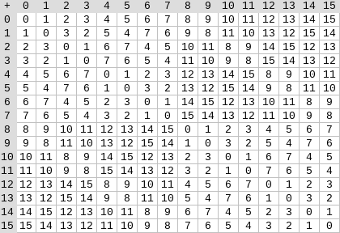
Left: addition table for four-bit binary field elements (ie. elements made up only of combinations of \(1\), \(x_0\), \(x_1\) and \(x_0x_1\)). Right: multiplication table for four-bit binary field elements.
The beautiful thing about this type of binary field is that it combines some of the best parts of "regular" integers and modular arithmetic. Like regular integers, binary field elements are unbounded: you can keep extending as far as you want. But like modular arithmetic, if you do operations over values within a certain size limit, all of your answers also stay within the same bound. For example, if you take successive powers of \(42\), you get:
\[1, 42, 199, 215, 245, 249, 180, 91...\]
And after 255 steps, you get right back to \(42^{255} = 1\). And like both regular integers and modular arithmetic, they obey the usual laws of mathematics: \(a*b = b*a\), \(a * (b+c) = a*b + a*c\), and even some strange new laws, eg. \(a^2 + b^2 = (a+b)^2\) (the usual \(2ab\) term is missing, because in a binary field, \(1 + 1 = 0\)).
And finally, binary fields work conveniently with bits: if you do math with numbers that fit into \(2^k\) bits, then all of your outputs will also fit into \(2^k\) bits. This avoids awkwardness like eg. with Ethereum's EIP-4844, where the individual "chunks" of a blob have to be numbers modulo
52435875175126190479447740508185965837690552500527637822603658699938581184513, and so encoding binary data involves throwing away a bit of space and doing extra checks at the application layer to make sure that each element is storing a value less than \(2^{248}\). It also means that binary field arithmetic is super fast on computers - both CPUs, and theoretically optimal FPGA and ASIC designs.This all means that we can do things like the Reed-Solomon encoding that we did above, in a way that completely avoids integers "blowing up" like we saw in our example, and in a way that is extremely "native" to the kind of calculation that computers are good at. The "splitting" property of binary fields - how we were able to do \(\texttt{1100101010001111} = \texttt{11001010} + \texttt{10001111} * x_3\), and then keep splitting as little or as much as we wanted, is also crucial for enabling a lot of flexibility.
Full Binius
See here for a python implementation of this protocol.
Now, we can get to "full Binius", which adjusts "simple Binius" to (i) work over binary fields, and (ii) let us commit to individual bits. This protocol is tricky to understand, because it keeps going back and forth between different ways of looking at a matrix of bits; it certainly took me longer to understand than it usually takes me to understand a cryptographic protocol. But once you understand binary fields, the good news is that there isn't any "harder math" that Binius depends on. This is not elliptic curve pairings, where there are deeper and deeper rabbit holes of algebraic geometry to go down; here, binary fields are all you need.
Let's look again at the full diagram:
By now, you should be familiar with most of the components. The idea of "flattening" a hypercube into a grid, the idea of computing a row combination and a column combination as tensor products of the evaluation point, and the idea of checking equivalence between "Reed-Solomon extending then computing the row combination", and "computing the row combination then Reed-Solomon extending", were all in simple Binius.
What's new in "full Binius"? Basically three things:
We will go through both in turn. First, the new extension procedure. A Reed-Solomon code has the fundamental limitation that if you are extending \(n\) values to \(k*n\) values, you need to be working in a field that has \(k*n\) different values that you can use as coordinates. With \(F_2\) (aka, bits), you cannot do that. And so what we do is, we "pack" adjacent \(F_2\) elements together into larger values. In the example here, we're packing two bits at a time into elements in \(\{0, 1, 2, 3\}\), because our extension only has four evaluation points and so that's enough for us. In a "real" proof, we would probably back 16 bits at a time together. We then do the Reed-Solomon code over these packed values, and unpack them again into bits.
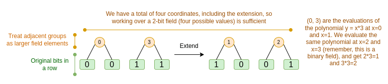
Now, the row combination. To make "evaluate at a random point" checks cryptographically secure, we need that point to be sampled from a pretty large space, much larger than the hypercube itself. Hence, while the points within the hypercube are bits, evaluations outside the hypercube will be much larger. In our example above, the "row combination" ends up being \([11, 4, 6, 1]\).
This presents a problem: we know how to combine pairs of bits into a larger value, and then do a Reed-Solomon extension on that, but how do you do the same to pairs of much larger values?
The trick in Binius is to do it bitwise: we look at the individual bits of each value (eg. for what we labeled as "11", that's \([1, 1, 0, 1]\)), and then we extend row-wise. That is, we perform the extension procedure on the \(1\) row of each element, then on the \(x_0\) row, then on the "\(x_1\)" row, then on the \(x_0 * x_1\) row, and so forth (well, in our toy example we stop there, but in a real implementation we would go up to 128 rows (the last one being \(x_6 *\ ... *\ x_0\))).
Recapping:
Why does this work? In "normal" math, the ability to (often) do linear operations in either order and get the same result stops working if you start slicing a number up by digits. For example, if I start with the number 345, and I multiply it by 8 and then by 3, I get 8280, and if do those two operations in reverse, I also do 8280. But if I insert a "split by digit" operation in between the two steps, it breaks down: if you do 8x then 3x, you get:
\[345 \xrightarrow{\times 8} 2760 \rightarrow [2, 7, 6, 0] \xrightarrow{\times 3} [6, 21, 18, 0]\]
But if you do 3x then 8x, you get:
\[345 \xrightarrow{\times 3} 1035 \rightarrow [1, 0, 3, 5] \xrightarrow{\times 8} [8, 0, 24, 40]\]
But in binary fields built with the tower construction, this kind of thing does work. The reason why has to do with their separability: if you multiply a big value by a small value, what happens in each segment, stays in each segment. If we multiply \(\texttt{1100101010001111}\) by \(\texttt{11}\), that's the same as first decomposing \(\texttt{1100101010001111}\) into \(\texttt{11} + \texttt{10} * x_2 + \texttt{10} * x_2x_1 + \texttt{10} * x_3 + \texttt{11} * x_2x_3 + \texttt{11} * x_1x_2x_3\), and then multiplying each component by \(\texttt{11}\) separately.
Putting it all together
Generally, zero knowledge proof systems work by making statements about polynomials that simultaneously represent statements about the underlying evaluations: just like we saw in the Fibonacci example, \(F(X+2) - F(X+1) - F(X) = Z(X) * H(X)\) simultaneously checks all steps of the Fibonacci computation. We check statements about polynomials by proving evaluations at a random point: given a commitment to \(F\), you might randomly choose eg. 1892470, demand proofs of evaluations of \(F\), \(Z\) and \(H\) at that point (and \(H\) at adjacent points), check those proofs, and then check if \(F(1892472) - F(1892471) - F(1892470)\) \(= Z(1892470) * H(1892470)\). This check at a random point stands in for checking the whole polynomial: if the polynomial equation doesn't match, the chance that it matches at a specific random coordinate is tiny.
In practice, a major source of inefficiency comes from the fact that in real programs, most of the numbers we are working with are tiny: indices in for loops, True/False values, counters, and similar things. But when we "extend" the data using Reed-Solomon encoding to give it the redundancy needed to make Merkle proof-based checks safe, most of the "extra" values end up taking up the full size of a field, even if the original values are small.
To get around this, we want to make the field as small as possible. Plonky2 brought us down from 256-bit numbers to 64-bit numbers, and then Plonky3 went further to 31 bits. But even this is sub-optimal. With binary fields, we can work over individual bits. This makes the encoding "dense": if your actual underlying data has
nbits, then your encoding will havenbits, and the extension will have8 * nbits, with no extra overhead.Now, let's look at the diagram a third time:
In Binius, we are committing to a multilinear polynomial: a hypercube \(P(x_0, x_1 ... x_k)\), where the individual evaluations \(P(0, 0 ... 0)\), \(P(0, 0 ... 1)\) up to \(P(1, 1, ... 1)\) are holding the data that we care about. To prove an evaluation at a point, we "re-interpret" the same data as a square. We then extend each row, using Reed-Solomon encoding over groups of bits, to give the data the redundancy needed for random Merkle branch queries to be secure. We then compute a random linear combination of rows, with coefficients designed so that the new combined row actually holds the evaluation that we care about. Both this newly-created row (which get re-interpreted as 128 rows of bits), and a few randomly-selected columns with Merkle branches, get passed to the verifier. This is \(O(\sqrt{N})\) data: the new row has \(O(\sqrt{N})\) size, and each of the (constant number of) columns that get passed has \(O(\sqrt{N})\) size.
The verifier then does a "row combination of the extension" (or rather, a few columns of the extension), and an "extension of the row combination", and verifies that the two match. They then compute a column combination, and check that it returns the value that the prover is claiming. And there's our proof system (or rather, the polynomial commitment scheme, which is the key building block of a proof system).
What did we not cover?
I expect many more improvements in binary-field-based proving techniques in the months ahead.